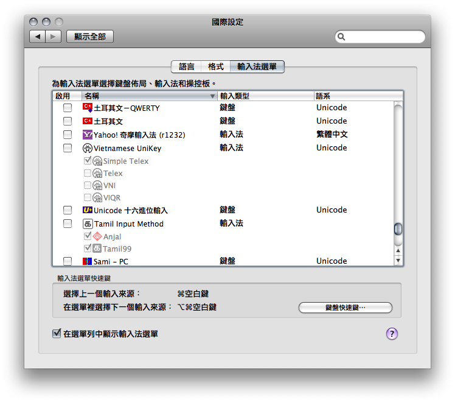

恭喜！您已經成功安裝了 Yahoo! 奇摩輸入法！
接下來，因為 Mac OS X 的系統設計，您需要先登出系統，再重新登入，才能夠開始使用新安裝的輸入法。而在重新登入之後，請根據以下步驟操作，將 Yahoo! 奇摩輸入法加入到您的輸入法選單中。
請您打開「系統偏好設定」中的「國際設定」。您可以從螢幕上方選單列的最左方，點選蘋果圖示，從選單中叫出「系統偏好設定」，在「系統偏好設定」第一列的圖示中，便可以找到「國際設定」。在「國際設定」中，請切換到第三個分頁「輸入法選單」。
在「輸入法選單」分頁的列表中，可以看到所有 Mac OS X 可用的各種語言鍵盤配置以及輸入法。請在列表中尋找「Yahoo! 奇摩輸入法」這個項目，在前方的方塊中打勾。
之後，您便可以在螢幕上方的選單列右上方，在系統輸入法選單中，看到「Yahoo! 奇摩輸入法」了。您可以在輸入法選單中，也可以用 cmd+space 快速鍵，在「Yahoo! 奇摩輸入法」與其他鍵盤配置或輸入法之間切換。